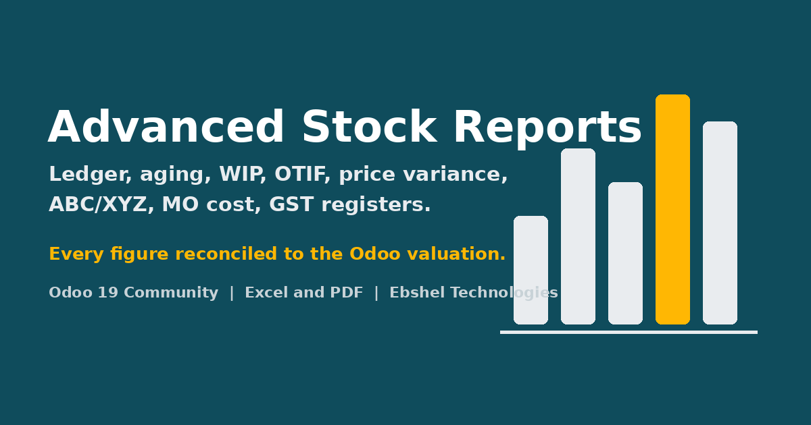

A daily movement table and a daily valuation table mirror, line for line, how Odoo 19 values stock: standard price history, AVCO replay, FIFO stack, anchored on the current quants, per company and reporting timezone. Every report reads those tables, so the ledger, the aging, the turnover and the GST register all foot to Inventory > Reporting > Stock.
Every write path that changes a done move's value feeds a recompute queue: adjust valuation, vendor bills, landed costs, purchase price edits, backdated pickings, move line corrections, standard price changes. A five-minute cron rebuilds only what changed; a health check compares the tables with Odoo's live figures.
Three groups: User, See Values and Manager. Without See Values, cost and value columns disappear from the screen, from Excel and from PDF. Multi-company record rules on every stored table.
Odoo 19.0 Community, designed to install on Enterprise. Depends on stock_account, mrp_account, purchase_stock and sale_stock. Uses xlsxwriter, which ships with Odoo. No JavaScript, no external library.